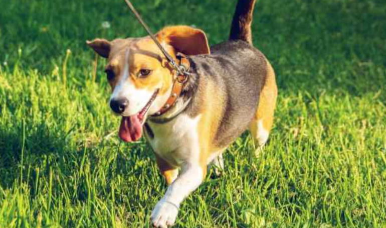
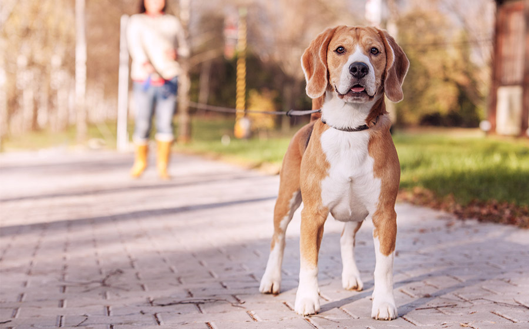

Nosso passeio
O serviço de Passeio do Petshop da Belinha é mais do que apenas uma volta no quarteirão; é uma experiência enriquecedora focada no bem-estar físico e mental do seu cão. Nossos passeios são conduzidos por dog walkers experientes e responsáveis, que utilizam técnicas de manejo positivo para garantir que a caminhada seja segura, divertida e estimulante. Antes de sair, avaliamos a energia e o temperamento do seu cão. O passeio é planejado com um ritmo adequado a ele, utilizando equipamentos de segurança apropriados (como coleiras anti-puxão, se necessário). Garantimos a hidratação e focamos na exploração de novos cheiros e texturas, o que é vital para o enriquecimento ambiental. Seu cão volta para casa mais calmo, com a energia gasta e a mente satisfeita.
Passeios regulares
Estabelecer uma rotina de passeios regulares é crucial para a qualidade de vida de qualquer cão, e não se resume apenas a fazer as necessidades. O passeio é a principal via para o gasto de energia física e mental. Cães que passeiam regularmente são menos propensos a desenvolver comportamentos destrutivos em casa (como roer móveis ou cavar), pois liberam o excesso de energia acumulada. Além disso, a saída é o momento de socialização (com pessoas, outros cães e ambientes diferentes), prevenindo o estresse e a ansiedade de separação. O estímulo olfativo de cheirar novos lugares ajuda a satisfazer o instinto natural do cão e a mantê-lo mentalmente saudável e equilibrado.
